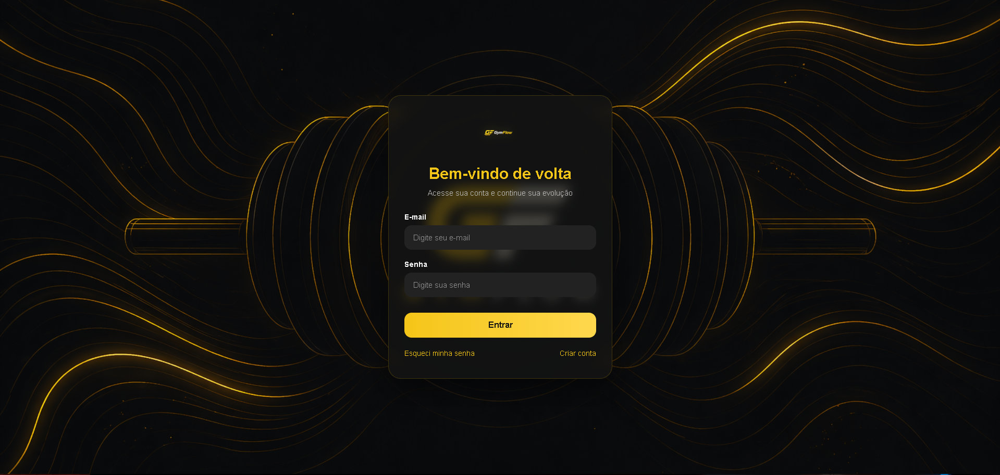

Erick Marcos Lopes Batista
Sou Erick Marcos, estudante de Ciência da Computação e apaixonado por tecnologia, inovação e desenvolvimento de soluções digitais. Tenho interesse em programação, inteligência artificial e criação de projetos que transformem ideias em realidade. Sou uma pessoa curiosa, dedicada e que está sempre em busca de novos conhecimentos e desafios. Acredito no aprendizado contínuo como caminho para o crescimento pessoal e profissional. Meu objetivo é evoluir constantemente e construir soluções que gerem impacto positivo.
Minhas Skills
HTML5
90%
CSS2
80%
JavaScript
75%
Comunicativo
95%
Inglês
85%
Trabalho em Equipe
85%
Edição de Video
95%
Formação
2020 - 2022
EE Professor Levi Vieira da Maia
Completo
2023 - Cursando
Universidade Guarulhos (UNG)
Ciencias Da Computação
Projetos

2022
Projeto de Videos
Projeto desenvolvido para treinar a inserção de videos em nosso site
Saiba Mais...
Criação de páginas web com foco na apresentação e organização de conteúdos em vídeo. Utiliza HTML5 para estruturar os elementos e CSS3 para estilizar a interface. Explora a incorporação de vídeos e recursos multimídia. Aplica conceitos de alinhamento, espaçamento e organização visual. Projeto desenvolvido para praticar a integração de diferentes mídias em páginas web.

2023
Projeto Cordel
Projeto Construido para treinar o efeito paralax em imagens
Saiba Mais...
Desenvolvimento de uma página dedicada à apresentação de um poema em estilo cordel. Utiliza HTML5 e CSS3 para combinar conteúdo textual e elementos visuais. Explora o efeito Parallax por meio de imagens de fundo fixas. Trabalha conceitos de tipografia, espaçamento e experiência de leitura. Projeto desenvolvido para explorar diferentes possibilidades visuais com CSS.

2023
Projeto Android
Projeto Construido para treinar Conteudos e imagens dinamicas!
Saiba Mais...
Criação de um site informativo sobre a história do mascote do sistema Android. Desenvolvido utilizando HTML5 e CSS3, com foco na organização do conteúdo. Apresenta imagens, vídeos e elementos visuais integrados ao layout. Aplica conceitos de responsividade, tipografia e hierarquia visual. Projeto voltado ao desenvolvimento de páginas modernas e adaptáveis.

2023
Projeto Social
Projeto Construido para construir um celular com redes
Saiba Mais...
Desenvolvimento de uma página interativa com foco na apresentação de redes sociais. Utiliza HTML5 e CSS3 para estruturar e estilizar os elementos da interface. Implementa navegação entre diferentes páginas e plataformas sociais. Explora conceitos de posicionamento, imagens e responsividade. Projeto desenvolvido para praticar a criação de interfaces web interativas.

2023
GymFlow
Sistema de Gestão para Academias
Saiba Mais...
Desenvolvimento de um sistema web para gerenciamento de academias e suas atividades. Criado com foco na organização e no controle das informações de alunos e administradores. Possui interface de login e integração com banco de dados MySQL. Utiliza PHP, HTML5, CSS3 e MySQL para implementar funcionalidades de gerenciamento. Projeto desenvolvido para aplicar conhecimentos de desenvolvimento web e integração com banco de dados.